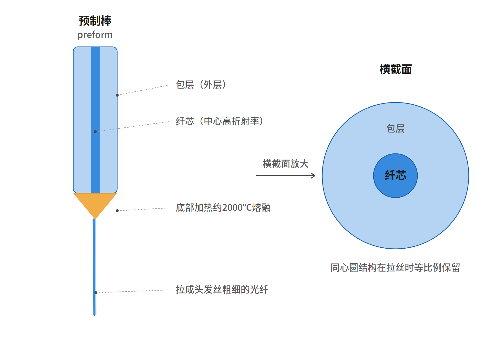
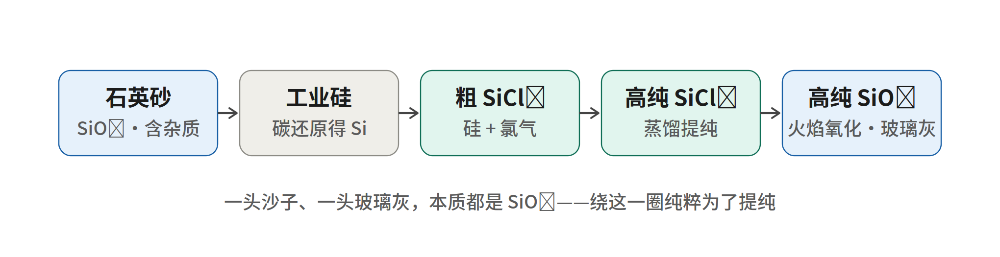
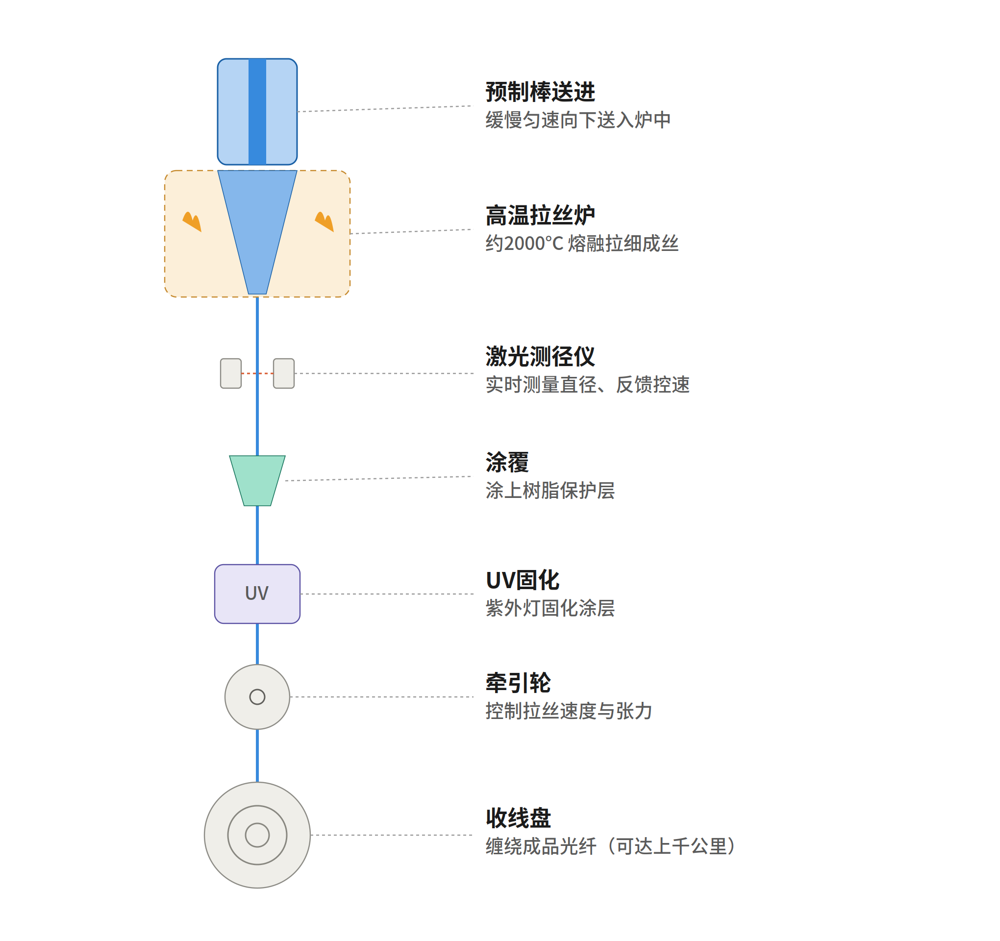
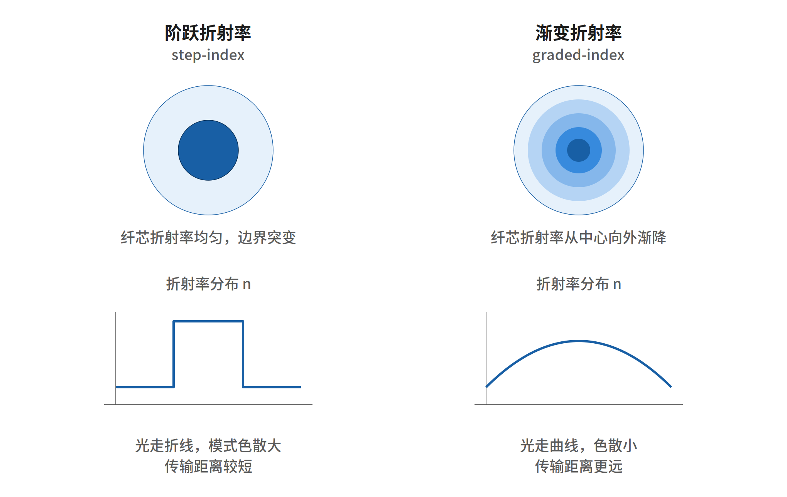
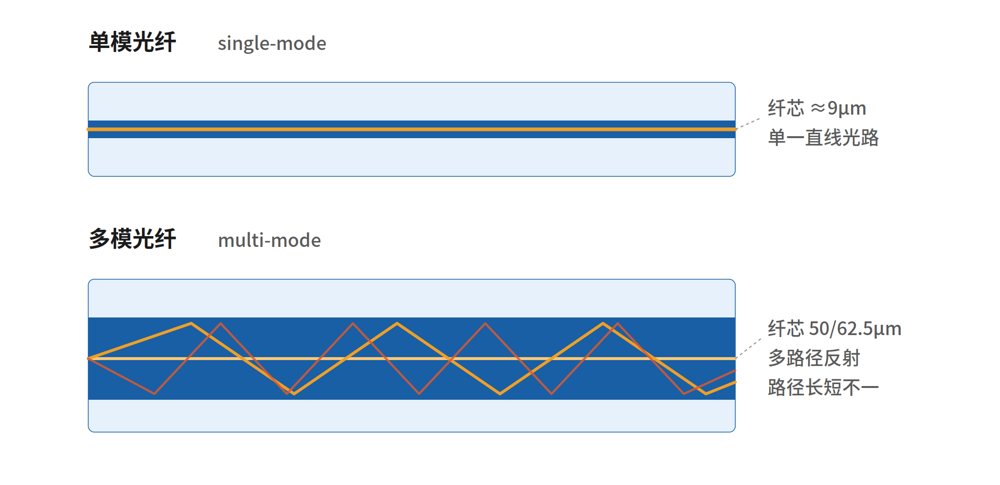
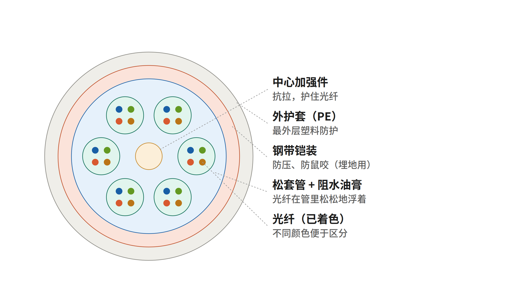
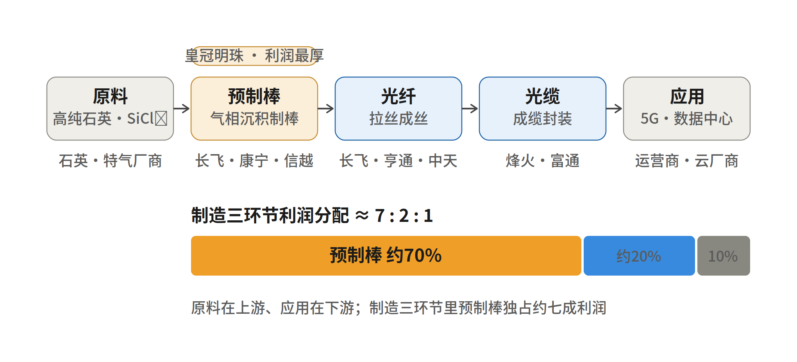
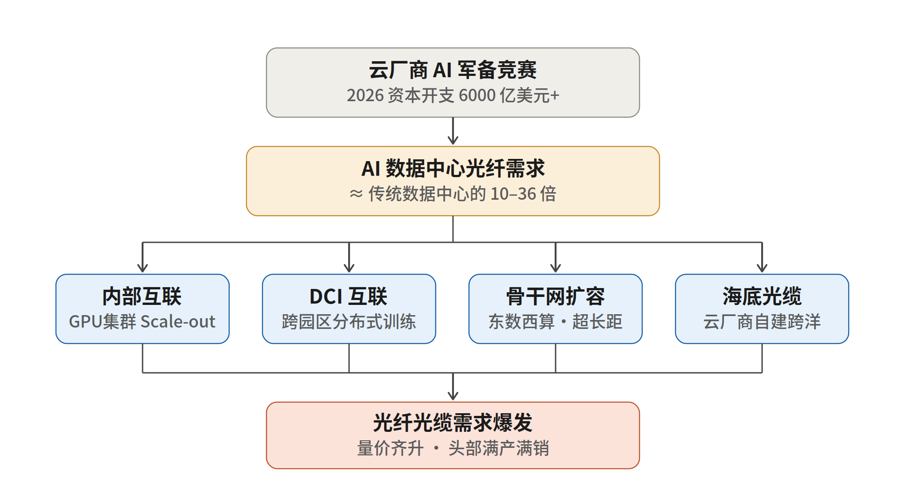

光纤光缆：从一根玻璃棒到 AI 算力的完整图景
知识沉淀 · 一次费曼式学习对话的系统整理
整理日期：2026 年 6 月
目录
导读
这份文档把一次完整的学习对话沉淀下来。我们从一个看似冷门的名词——“光纤预制棒（Optical Fiber Preform）”出发，一路追问到底，最后串成了一条完整的认知链：一根玻璃棒是怎么造出来的 → 它怎么拉成头发丝粗细的光纤 → 光为什么能在里面跑 → 光纤怎么变成能埋地下海的光缆 → 这门生意的钱都被谁赚走了 → 以及为什么 AI 突然让这个成熟行业重新沸腾。
行文尽量保持“费曼小白”的风格：少术语、多比喻，先讲清楚“是什么、为什么”，再上数据。读完它，你应该能对光纤光缆这条产业链建立起从物理底层到投资逻辑的整体框架。
一、光纤是什么、怎么造出来的
1.1 光纤预制棒：产业的“皇冠明珠”
光纤预制棒是制造光纤的原材料母棒，可以理解为光纤的“半成品胚胎”。它是一根高纯度石英玻璃棒，内部的折射率结构已经按光纤的设计预先做好了。
整条链的逻辑是：高纯原料 → 预制棒 → 拉丝 → 光纤 → 光缆。打个比方，预制棒就像做拉面前那块已经醒好、配比调好的大面团——一根直径几厘米、长一两米的预制棒，加热软化后能拉出几百甚至上千公里的光纤。关键在于：拉丝只是等比例缩小，预制棒内部“纤芯+包层”的结构会被完整保留。
它之所以是产业核心，是因为它是整条链里技术门槛最高、利润最厚的环节，业界直接称它为“光纤产业皇冠上的明珠”。
1.2 预制棒的内部结构：纤芯 + 包层
预制棒（以及拉出来的光纤）的横截面是一组同心圆：中心是折射率略高的纤芯，外面包着折射率略低的包层。光被“锁”在纤芯里来回全反射，从而沿着光纤传播。拉丝时整根棒被加热到约 2000°C 软化拉细，这个同心圆结构会等比例缩小并完整保留——所以预制棒的内部结构基本决定了最终光纤的全部性能。

图 1 预制棒结构与横截面
1.3 上游原料：高纯石英 与 SiCl₄
产业链最上游是两样原料：
高纯石英：就是结晶状态的二氧化硅（SiO₂，水晶、沙子的主要成分）提纯到极致干净的版本。它是现成的固体玻璃料，用来做石英管、玻璃件和包层基础材料。
SiCl₄（四氯化硅）：把硅“打包”成一种沸点很低（约 57°C）、能气化、能蒸馏提纯的液体，是气相沉积时精确“长”出超纯玻璃的硅源。
1.4 提纯闭环：从沙子到超纯玻璃
一个反直觉但关键的事实：光纤玻璃的本质是 SiO₂（二氧化硅），不是纯硅。 纯硅（Si）是灰黑、不透明、能导电的半导体（芯片用的就是它）；二氧化硅（SiO₂）才是透明的玻璃。两者只差“氧”。有意思的是，信息时代的两大基石——芯片用纯硅、光纤用二氧化硅——都建立在“硅”这一种元素上。
那为什么造预制棒要绕一大圈？因为纯度。光纤要纯到几十亿个原子里才容一个杂质，而固体没法洗到这么纯。于是工程师走了一条“拆了重装”的路：
| 步骤 | 化学过程 | 目的 |
| ① 沙子变硅 | SiO₂ + 2C → Si + 2CO（电弧炉约 2000°C，碳还原） | 得到工业硅（约 98–99%，还很粗） |
| ② 硅变 SiCl₄ | Si + 2Cl₂ → SiCl₄（高温氯化，给硅“拴上四个氯”） | 变成能气化、能蒸馏的液体 |
| ③ 蒸馏提纯 | 反复蒸馏 SiCl₄（杂质沸点不同，留在底部） | 把硅源提纯到极致干净 |
| ④ 火焰氧化 | SiCl₄ + O₂ → SiO₂ + 2Cl₂（甩掉氯，硅重新抓住氧） | 得到超纯 SiO₂“玻璃灰”，再烧结成玻璃 |
注意首尾：一头是 SiO₂（沙子），一头还是 SiO₂（玻璃灰）——绕了一大圈又回到二氧化硅，绕这一圈纯粹是为了提纯。这步“让含硅气体在高温下反应生成玻璃灰、再烧结成玻璃”的过程，就叫气相沉积（像把蜡烛烟灰一层层积在勺子上，只不过积的是白色玻璃灰）。

图 2 从沙子到超纯玻璃的提纯闭环
1.5 三大制造工艺：MCVD / OVD / VAD
三种主流工艺底层都是气相沉积，区别只在让“玻璃灰”沉积在哪儿：
| 工艺 | 沉积位置 | 核心特点 | 代表厂商 |
| MCVD | 石英管内壁 | 管内沉积再缩棒；精度高、原料控制好，但受管径限制、单棒小、产量低；适合高端特种纤（PCVD 是其等离子加热变种） | 信越等（特种纤） |
| OVD | 芯棒外表面 | 像滚雪球一层层喷沉积，不受管径限制、能做大棒、产量高，适合大规模量产 | 康宁（Corning，鼻祖） |
| VAD | 籽棒端面 | 沿轴向连续生长、可不间断生产，效率最高、能做超大超长棒 | 信越、住友（日本） |
一句话：MCVD 在管子里面长（精但小）；OVD 在棒子外面长（粗且量大）；VAD 在棒子端面长（能连续不停）。国内龙头长飞同时掌握 OVD+VAD+PCVD 三种工艺。
1.6 拉丝：从预制棒到光纤丝
预制棒造好后，在“拉丝塔”上拉成光纤。预制棒竖直吊在塔顶，底部加热到约 2000°C 软化，像拉糖丝一样向下拉出极细的光纤。整个流程由内向外是：
预制棒送进 → 缓慢匀速送入炉中
高温拉丝炉 → 约 2000°C 熔融拉细
激光测径仪 → 实时测直径，与牵引轮构成闭环，把直径稳定控制在约 125 微米
涂覆 + UV 固化 → 给脆弱的裸纤涂上保护层并固化
牵引轮 + 收线盘 → 控制速度张力，缠绕成品（一根棒可拉出上千公里光纤）

图 3 拉丝塔工艺流程
二、光纤的分类与传光原理
2.1 折射率：阶跃型 vs 渐变型
同样是“纤芯+包层”，纤芯里折射率怎么分布，决定了光怎么走、能传多远。
| 维度 | 阶跃折射率（step-index） | 渐变折射率（graded-index） |
| 折射率分布 | 纤芯内均匀，到包层突变（曲线像台阶） | 从中心向外平滑递减（曲线像抛物线） |
| 光的路径 | 靠全反射走折线，不同角度路径长短不一 | 被一路“掰弯”走曲线 |
| 色散与距离 | 模式色散大、传输距离较短 | 外圈走低折射率区光速快，各路径几乎同时到达，色散小、传得更远 |
记忆法：阶跃型像“直角台阶”，光横冲直撞走折线；渐变型像“平滑山坡”，光走曲线，跑得又齐又远。

图 4 阶跃折射率 vs 渐变折射率
2.2 模式：单模 vs 多模
纤芯有多粗，决定了光是只能走一条路、还是能走很多条路。
| 维度 | 单模光纤（single-mode） | 多模光纤（multi-mode） |
| 纤芯直径 | 极细，约 9μm | 较粗，50 / 62.5μm |
| 光路 | 几乎只有一条直线路径，色散极小 | 多条不同角度路径反射，模式色散明显 |
| 传输距离 | 几十到上百公里（长途骨干网） | 几百米到 2 公里（数据中心、局域网） |
| 光源与成本 | 需激光光源，对接精度高、成本较高 | LED / VCSEL 即可，好对接、便宜 |
一句话：单模 = 细芯走直线，贵但传得远；多模 = 粗芯走折线，便宜但传得近。

图 5 单模光纤 vs 多模光纤
2.3 损耗：为什么一点点杂质就让光传不动
损耗（衰减）指光在光纤里越走越弱，弱到一定程度就收不到信号，用 dB/km 衡量。为什么一丁点杂质就致命？关键在“距离极长 + 累积效应”。
把一根光纤想象成“几万片玻璃窗叠在一起、排成一长排”，光要一片片穿过去。一片窗只暗一丝丝你看不出来，但几万片每片都暗一丝丝，叠加起来光就全没了。
所以每一米都必须干净到极致。两个头号“光小偷”是金属离子（铁、铜等，吸收特定波长的光、变成热）和水（羟基 OH⁻）（在约 1383nm 处吸光极强，极少量就让损耗飙升）。此外还有一个物理底线损耗——瑞利散射（玻璃凝固时冻结的微小密度起伏会散射掉一点光），它是物理极限，杂质只会雪上加霜。
一个震撼的对比：现代光纤损耗低到约 0.2 dB/km——如果海水有这么清澈，你能一眼看到几公里深的海底；而普通窗玻璃若做成几公里长，光走几米就被吸光了。这就是为什么整个上游死磕提纯、为什么要把硅拆成 SiCl₄ 来蒸馏，也是为什么预制棒环节壁垒最高、利润最厚。
2.4 物理彩蛋：波长、瑞利散射、天空与三棱镜
波长（λ）就是“光这串波浪里，一个浪头有多长”——相邻两个波峰之间的距离。波长长（红、红外）浪头舒展，波长短（蓝、紫）浪头紧密。对可见光，波长决定颜色：从长到短是红橙黄绿蓝紫；比红更长的（红外、无线电）和比紫更短的（紫外、X 光）人眼看不见。单位 nm（纳米）= 十亿分之一米。
瑞利散射的强度 ∝ 1/λ⁴——波长越短散射越狠。这一条定律同时解释了两件事：
天空为什么是蓝的：阳光（白光=各种颜色混合）撞上空气分子，短波的蓝光被散射得到处都是，从四面八方钻进你眼睛，所以整片天看起来是蓝的。夕阳是红的，则是因为斜射穿过更厚大气，蓝光半路被散射光了，只剩红光直达。
光纤为什么用红外光：既然短波散得多，工程师就反过来，专挑散射最少的长波——红外光（1310nm / 1550nm）。可见光约 500nm 对比红外 1550nm，(1550/500)⁴ ≈ 92 倍，即红外的瑞利散射只有可见光的约九十分之一，所以传得最远。
顺带：三棱镜（横截面是三角形的透明玻璃/亚克力块）能把白光分成彩虹，靠的是折射/色散（不同波长弯折角度不同，红弯得最少、紫最多）——这与天空变蓝的“散射”是不同机制，但都跟波长有关。淘宝买个小三棱镜，晴天让阳光斜射进去、对着白纸慢慢转角度，就能复现牛顿三百多年前的实验。
三、光纤怎么变成光缆
裸光纤就是一根头发丝粗细的玻璃丝，太脆，直接埋地、上杆、沉海会断。“光纤变光缆”的本质，就是给脆弱的玻璃丝层层穿上盔甲，让它扛得住拉扯、挤压、潮湿、鼠咬。
3.1 光缆的横截面结构（由内向外）
光纤（已着色）：一根缆里几十上百根光纤，靠不同颜色区分认线。
松套管 + 阻水油膏：光纤松松地浮在油膏里、留有余量。缆受力时让光纤不受力、有缓冲；油膏同时阻水防潮。
中心加强件（钢丝或玻纤棒）：抗拉的“脊梁”，施工拽缆时力让它扛、光纤躲在旁边。
钢带铠装：防压、防鼠咬（埋地缆用）。
外护套（PE）：最外层防水防晒的塑料外衣。

图 6 层绞式光缆横截面结构
3.2 成缆工艺流程
制造过程就是由内向外、一层层穿上去：着色（光纤上色区分）→ 二次套塑（光纤+油膏挤进塑料松套管）→ 绞合成缆（多根套管绕中心加强件 SZ 绞合、填阻水材料）→ 挤护套（熔融 PE 挤出外护套）→ 铠装·测试·收卷（埋地缆加钢带铠装，通光测试合格后缠到缆盘出厂）。
不同场景盔甲差别很大：室内跳线只有一层软护套；埋地干线要钢带铠装；海底光缆最夸张——多层钢丝铠装、还裹铜导体给中继器供电，一根能有手臂粗。但内核都是这同一套逻辑。
四、产业链全景与竞争格局
4.1 五大环节与 7:2:1 利润分配
产业链是：原料 → 预制棒 → 光纤 → 光缆 → 应用。上游原料是高纯石英、SiCl₄、特种气体；中游三环节是制造核心；下游应用是 5G、数据中心、海缆、FTTH 入户等。

图 7 光纤产业链全景与利润分配（7:2:1）
制造三环节的利润分配大致是 7 : 2 : 1：
| 环节 | 利润占比 | 说明 |
| 预制棒 | 约 70% | 技术与资本壁垒最高，决定光纤全部核心性能 |
| 光纤（拉丝） | 约 20% | 相对标准化的工序 |
| 光缆（成缆） | 约 10% | 封装防护，价值最薄 |
4.2 为什么预制棒利润最厚：四道护城河
技术壁垒最高：把玻璃纯到金属杂质 ppm 级的 know-how 是几十年砸出来的，棒做好后拉丝、成缆相对标准化，价值往最难处集中。
资本壁垒重：建产线动辄几十亿，规模效应明显，小玩家进不来。
集中度高 → 议价权强：全球约 20 家、国内 CR5 超 70%，头部对下游定价权强。
它决定成败：损耗、带宽、单模多模、特种纤等核心性能在预制棒阶段就定型，后面无法弥补。谁掌握预制棒，谁就掌握整条链命脉。
一个佐证：长飞 2023 年营收虽下降，但光纤及预制棒业务毛利率反而提升近 6 个百分点、达到 53%——越靠近预制棒，毛利越厚、越抗周期。
4.3 代表厂商与行业集中度（CR）
CR（Concentration Ratio，集中度）= 排名前 n 的公司市场份额之和。 CR3 = 前 3 名合计；CR5 = 前 5 名合计。“CR5 超 70%”意味着最大的 5 家就吃掉了 70%+ 的市场，其余几十家分不到 30%。CR 越高 = 行业越集中、巨头议价权越强、新人越难进入——它本身就是“有壁垒、利润厚”的信号。
国内是“棒-纤-缆”垂直整合格局：长飞（预制棒/光纤/光缆市占率连续多年全球第一，掌握三大工艺、自给率 100%、全球光棒市占约 14.2%）、亨通光电、中天科技（海缆、特种纤强）、烽火通信（央企）、富通等。国际巨头是康宁（Corning，美国）、信越、住友（日本）。受技术限制全球光棒厂家仅约 20 家，集中在日、美、中；2020 年中国市场 CR3 超 50%、CR5 超 70%。
五、AI 算力如何重塑光纤行业
过去十年光纤靠 5G 和光纤入户（运营商买单）；2025 年起增长逻辑变了——AI 与智算中心建设成了新引擎，主力客户从运营商转向“烧算力”的云厂商。行业把 2025 的关键词定为“复苏”，2026 定为“重塑”。
5.1 核心机制：10–36 倍的需求放大
AI 训练集群动辄几万到几十万块 GPU 协同，GPU 之间的互联只能靠光纤，互联密度呈指数级上升。结果：生成式 AI 网络对光纤的需求是传统数据中心的 10 倍以上；更细口径下，以 AI 为核心的数据中心所需光纤约是传统 CPU 机架的 36 倍，搭载 72 个 GPU 的英伟达 Blackwell 节点所需光纤是传统云交换机的 16 倍。一个典型万卡 GPU 集群，仅服务器内部互连就需数万芯公里光纤。
5.2 四条拉动路径
① 数据中心内部互联（最大头）：GPU 集群 Scale-out 横向扩展网络，光纤用量随节点数成倍增长。
② 数据中心互联 DCI：单座装不下超大模型，工作负载分散到多个互联园区，分布式训练拉动城域/长途光缆。
③ 骨干网扩容：对应“东数西算”，算力在西、需求在东，超长距大容量骨干网加速部署 G.654.E 等高端光纤。
④ 海底光缆：全球化 AI 基础设施需要跨洋连接，科技巨头自建海缆。
真实订单已落地：2026 年 1 月康宁与 Meta 达成高达 60 亿美元的光纤供货协议；仅 Meta 路易斯安那州 Hyperion 一座数据中心就需采购 800 万英里光纤。Meta、OpenAI、谷歌、亚马逊、微软均在大规模采购。

图 8 AI 算力拉动光纤需求的传导逻辑
5.3 结果：量价齐升
| 指标 | 数据 |
| AI 占光纤下游需求 | 2024 年 <5% → 2027 年预计 35%（中金/国泰海通） |
| 全球数据中心光纤用量 | 2025 年 6960 万芯公里 → 2026 年破 1 亿芯公里（同比约 +150%） |
| 全球光纤总需求 | 预计 2027 年攀升至 8.8 亿芯公里 |
| G.652.D 单模光纤价格 | 元旦前约 18 元/芯公里 → 85–120 元/芯公里 |
| G.657.A2 光纤价格 | 约 35 元 → 210–230 元/芯公里（涨幅约 650%） |
| 空芯光纤价格 | 2.5 万–5 万元/芯公里，行业从“货到付款”转为“先款后货” |
| 头部产能利用率 | 长飞/中天/烽火满产满销，全球产能利用率 >95% |
数据来源：CRU、中金公司、国泰海通、光大证券、康宁公告、21 经济网、通信世界网等公开报道（2026 年初）。
5.4 谁受益 + 一个关键提醒
最受益的是棒纤缆一体化的龙头（量价齐升通吃）和有特种/空芯光纤布局的公司（高端光纤溢价 20%–30%）。
关键提醒：别被全民狂欢的叙事冲昏头。 这一轮主要是海外/北美在驱动，国内 AI 对光纤的拉动还没真正放量——有上市公司负责人直言“国内 AI 数据中心建设对光纤的需求影响还不显著”，CRU 也预计 2026 年中国光纤光缆需求同比还下滑 1.4%（只是进入由高端/特种纤引领的“供需紧平衡”）。当前国内弹性更多来自“特种纤产能挤压普通纤、推动价格跟涨”。国内 AI 需求真正放量是后面的潜在增量。风险点：AI 资本开支若不及预期、技术迭代节奏变化，需求逻辑就会松动。
结语：一条从物理到投资的认知链
从“为什么一点点杂质就让光传不动”这一个物理事实出发，能一路解释到整条产业链为什么长这样、利润为什么集中在预制棒、以及 AI 为什么能重塑格局。这正是这门生意最底层的逻辑起点：光要穿过几万片玻璃窗，每片必须干净到极致 → 纯度要求变态高 → 固体洗不净就拆成 SiCl₄ 蒸馏 → 预制棒壁垒最高、利润最厚 → 谁掌握预制棒谁就掌握命脉。
待探索（下一步可深入）：
空芯光纤（Hollow-core）会不会重塑格局：AI 集群对延迟极度敏感，光在空气里比玻璃里快约 47%，空芯光纤天然低延迟，叠加 2.5–5 万/芯公里的高溢价，是下一代技术战场——本质是问“现有护城河会不会被改写”。
对龙头（如长飞）做量化评估：把估值/增长/质量/安全指标摊开横向对比（定量梳理与事实分析，非买卖建议）。